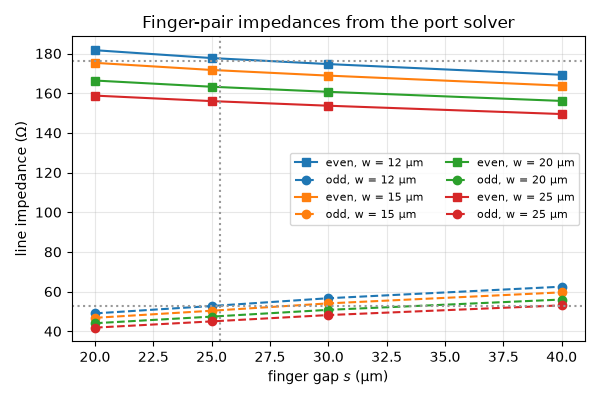
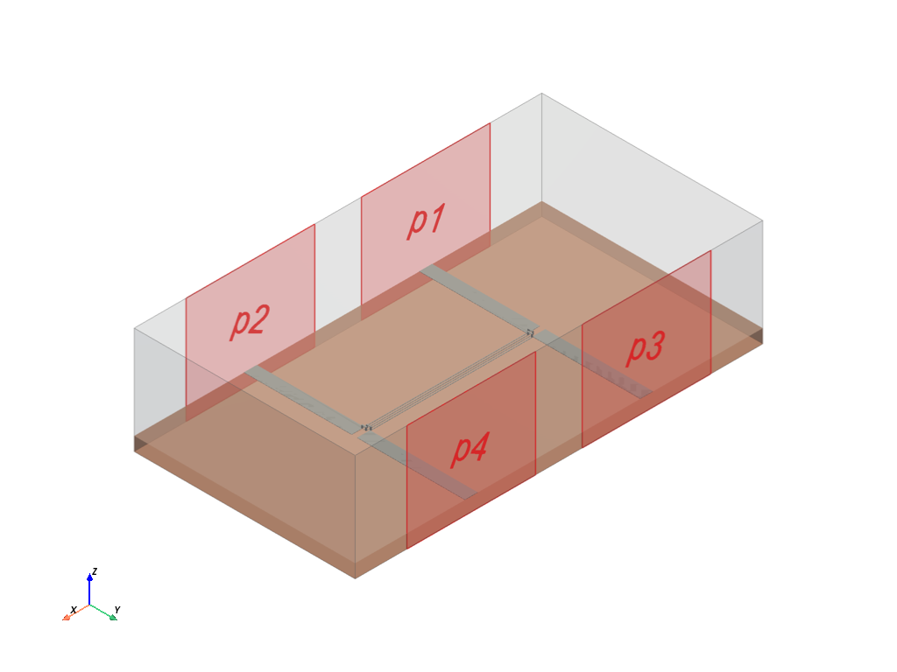
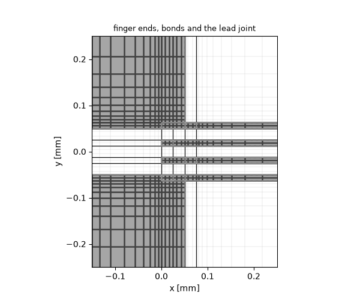
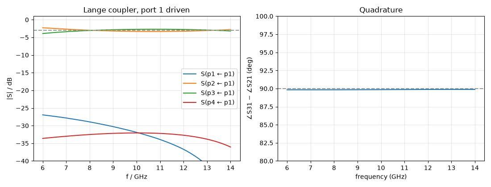

Note
Go to the end to download the full example code.
Lange coupler: a 3-dB interdigitated coupler dimensioned with the port solver#
A single pair of coupled microstrip lines cannot reach 3 dB coupling on a substrate anyone can fabricate — the gap would have to be a few micrometres. Lange’s answer (1969) is to split each line into two narrow fingers and interleave them, so every finger couples to two neighbours; bond wires join the fingers of one line at both ends. The result is a quarter-wave 3-dB quadrature coupler with fabricable gaps, the workhorse of balanced amplifiers and image-reject mixers. This guide designs one at 10 GHz on 254 µm alumina and reads coupling, phase and match off a four-port run.
New compared with the coupled-line coupler page:
the synthesis formula for an interdigitated coupler: the even- and odd-mode impedances a pair of adjacent fingers must have so that the whole four-finger structure couples 3 dB (Ou, IEEE Trans. MTT-23, 1975);
a two-dimensional design step — finger width and gap — done entirely with the port solver, sixteen slice meshes of a fraction of a second each;
ribbon bonds as resolved metal: a bond wire’s radius has to stay well below the cell next to the metal, and a Lange needs cells of a few micrometres there, so the bonds are three small bricks each — a post on either finger and a beam over the one in between.
The dimensions come out at the thin-film edge — fingers of 12–15 µm — because 254 µm is a thick substrate for a 10 GHz Lange; a 635 µm carrier scales every transverse dimension by 2.5.
import matplotlib.pyplot as plt
import numpy as np
import magnelio as mio
from magnelio import geo, plots, ports
from magnelio.constants import C0
Given quantities#
Substrate, band and target. The gold is 5 µm thick; the mesher’s
thin-metallisation path handles it, with the min_cell_size floor
set below.
eps_r = 9.8 # alumina
h_sub = 254e-6 # substrate height
t_au = 5e-6 # metallisation thickness
h_box = 2.0e-3 # shield height above the ground plane
z0 = 50.0 # system impedance
f0 = 10.0e9 # centre frequency
f_min, f_max = 6.0e9, 14.0e9
coupling_db = -3.0 # target coupling at f0
k_fingers = 4
alumina = mio.Material.from_isotropic(name="alumina", epsilon=eps_r)
The synthesis#
For a coupler of \(k\) fingers and voltage coupling \(C\) the even- and odd-mode impedances of one adjacent finger pair are
For \(k = 2\) this is the plain coupled-line result; for \(k = 4\) and 3 dB it asks for 176 Ω / 53 Ω — a pair coupling of only −6 dB, which is what makes the gap fabricable.
def lange_pair_impedances(c, k, z0):
"""(Z_even, Z_odd) of one adjacent finger pair for coupling *c* with *k* fingers."""
q = np.sqrt(c**2 + (1 - c**2) * (k - 1) ** 2)
z_odd = z0 * np.sqrt((1 - c) / (1 + c)) * (k - 1) * (1 + q) / ((c + q) + (k - 1) * (1 - c))
z_even = z_odd * (c + q) / ((k - 1) * (1 - c))
return z_even, z_odd
c_target = 10 ** (coupling_db / 20)
z_even_target, z_odd_target = lange_pair_impedances(c_target, k_fingers, z0)
print(f"target: C = {c_target:.4f} ({coupling_db:.0f} dB), {k_fingers} fingers")
print(f" Z_even = {z_even_target:.1f} ohm, Z_odd = {z_odd_target:.1f} ohm")
c_pair = (z_even_target - z_odd_target) / (z_even_target + z_odd_target)
print(f" pair coupling {20 * np.log10(c_pair):.1f} dB")
target: C = 0.7079 (-3 dB), 4 fingers
Z_even = 176.4 ohm, Z_odd = 52.5 ohm
pair coupling -5.3 dB
The knobs#
w— finger width,s— finger gap. Together they set the pair’s even- and odd-mode impedances; the ratio is mostly the gap, the geometric mean mostly the width.the mesh next to the metal. The odd mode of a 25 µm gap lives within a few tens of micrometres of the surface, and its impedance moves by tens of percent until the cells there are below 10 µm.
singularity_refinementgrades the planes holding the finger edges from a fraction of the feature size — the design step and the coupler run share this control, because the impedances are properties of the grid as much as of the geometry.
Dimensioning the pair with the port solver#
A short slice of two fingers on the substrate with a port across its face returns the pair’s even and odd modes with their impedances and effective permittivities; no time-domain run. Sixteen slices, well under a second each.
def pair_modes(w, s, length=1e-3, w_box=6e-3):
"""(Z_even, Z_odd, eps_even, eps_odd) of a finger pair on this grid."""
model = mio.GeometryModel()
model.add(geo.Brick(origin=(0, -w_box / 2, 0), size=(length, w_box, h_sub), material=alumina))
air = geo.Brick(
origin=(0, -w_box / 2, h_sub), size=(length, w_box, h_box - h_sub), material="air"
)
fingers = [
geo.Brick(origin=(0, yc - w / 2, h_sub), size=(length, w, t_au), material="pec")
for yc in (-(w + s) / 2, (w + s) / 2)
]
model.add(geo.Difference(air, *fingers))
for finger in fingers:
model.add(finger)
model.add_port(ports.PortWaveguide(name="pair", plane="xmin", n_modes=2))
mesh = mio.Mesh.from_geometry(model, mesh_control, f_max=f_max)
report = mio.AnalysisScatteringTD(mesh=mesh, verbose=False).solve_ports()["pair"]
even, odd = report.modes
return even.z_line, odd.z_line, even.epsilon_eff, odd.epsilon_eff
table = np.array([[pair_modes(w, s) for s in gaps] for w in widths]) # (w, s, 4)
z_even, z_odd, eps_even, eps_odd = (table[..., i] for i in range(4))
for i, w in enumerate(widths):
for j, s in enumerate(gaps):
print(
f"w = {w * 1e6:3.0f} um, s = {s * 1e6:3.0f} um: "
f"Z_even = {z_even[i, j]:6.1f}, Z_odd = {z_odd[i, j]:5.1f} ohm, "
f"ratio {z_even[i, j] / z_odd[i, j]:.2f}, "
f"mean {np.sqrt(z_even[i, j] * z_odd[i, j]):5.1f} ohm"
)
w = 12 um, s = 20 um: Z_even = 181.7, Z_odd = 49.0 ohm, ratio 3.71, mean 94.4 ohm
w = 12 um, s = 25 um: Z_even = 177.7, Z_odd = 52.7 ohm, ratio 3.37, mean 96.8 ohm
w = 12 um, s = 30 um: Z_even = 174.7, Z_odd = 56.6 ohm, ratio 3.08, mean 99.5 ohm
w = 12 um, s = 40 um: Z_even = 169.3, Z_odd = 62.5 ohm, ratio 2.71, mean 102.8 ohm
w = 15 um, s = 20 um: Z_even = 175.3, Z_odd = 46.8 ohm, ratio 3.75, mean 90.5 ohm
w = 15 um, s = 25 um: Z_even = 171.7, Z_odd = 50.3 ohm, ratio 3.41, mean 93.0 ohm
w = 15 um, s = 30 um: Z_even = 168.9, Z_odd = 54.0 ohm, ratio 3.12, mean 95.5 ohm
w = 15 um, s = 40 um: Z_even = 163.8, Z_odd = 59.6 ohm, ratio 2.75, mean 98.8 ohm
w = 20 um, s = 20 um: Z_even = 166.4, Z_odd = 44.0 ohm, ratio 3.78, mean 85.6 ohm
w = 20 um, s = 25 um: Z_even = 163.3, Z_odd = 47.4 ohm, ratio 3.45, mean 87.9 ohm
w = 20 um, s = 30 um: Z_even = 160.7, Z_odd = 50.8 ohm, ratio 3.16, mean 90.3 ohm
w = 20 um, s = 40 um: Z_even = 156.1, Z_odd = 56.0 ohm, ratio 2.79, mean 93.5 ohm
w = 25 um, s = 20 um: Z_even = 158.8, Z_odd = 41.8 ohm, ratio 3.80, mean 81.5 ohm
w = 25 um, s = 25 um: Z_even = 156.0, Z_odd = 45.0 ohm, ratio 3.47, mean 83.8 ohm
w = 25 um, s = 30 um: Z_even = 153.7, Z_odd = 48.2 ohm, ratio 3.19, mean 86.0 ohm
w = 25 um, s = 40 um: Z_even = 149.5, Z_odd = 53.1 ohm, ratio 2.82, mean 89.1 ohm
Two targets, two knobs. The impedance ratio is a function of the gap almost alone, so first the gap that gives the target ratio is read for every width; then the width whose geometric mean at that gap meets \(\sqrt{Z_{0e} Z_{0o}}\).
ratio = z_even / z_odd
mean = np.sqrt(z_even * z_odd)
ratio_target = z_even_target / z_odd_target
mean_target = np.sqrt(z_even_target * z_odd_target)
s_at_w = np.array([np.interp(ratio_target, ratio[i, ::-1], gaps[::-1]) for i in range(len(widths))])
mean_at_w = np.array([np.interp(s_at_w[i], gaps, mean[i]) for i in range(len(widths))])
w_design = float(np.interp(mean_target, mean_at_w[::-1], widths[::-1]))
s_design = float(np.interp(w_design, widths, s_at_w))
eps_mean = float(
np.interp(
w_design,
widths,
[np.interp(s_design, gaps, 0.5 * (eps_even[i] + eps_odd[i])) for i in range(len(widths))],
)
)
length = C0 / f0 / np.sqrt(eps_mean) / 4.0
print(f"design: w = {w_design * 1e6:.1f} um, s = {s_design * 1e6:.1f} um")
print(f" quarter wave at eps_mean = {eps_mean:.3f}: L = {length * 1e3:.3f} mm")
fig, ax = plt.subplots(figsize=(6.0, 4.0))
for i, w in enumerate(widths):
ax.plot(gaps * 1e6, z_even[i], "s-", color=f"C{i}", label=f"even, w = {w * 1e6:.0f} µm")
ax.plot(gaps * 1e6, z_odd[i], "o--", color=f"C{i}", label=f"odd, w = {w * 1e6:.0f} µm")
ax.axhline(z_even_target, color="0.6", ls=":")
ax.axhline(z_odd_target, color="0.6", ls=":")
ax.axvline(s_design * 1e6, color="0.6", ls=":")
ax.set_xlabel("finger gap $s$ (µm)")
ax.set_ylabel("line impedance (Ω)")
ax.set_title("Finger-pair impedances from the port solver")
ax.grid(alpha=0.3)
ax.legend(fontsize=8, ncol=2)
fig.tight_layout()

design: w = 12.6 um, s = 25.4 um
quarter wave at eps_mean = 5.717: L = 3.135 mm
The coupler#
Four fingers along x at pitch w + s, centred on y = 0.
Fingers 1 and 3 form one line, 2 and 4 the other; a ribbon bond at
each end joins the two fingers of a line over the one between them,
the two bonds of an end staggered along the fingers.
Each outer finger carries a 50 Ω lead at both ends that leaves at a
right angle — line 1 (fingers 1, 3) toward ymin, line 2 toward
ymax — and ends square on the box wall at a port. The leads
have to part immediately: two 240 µm lines running side by side at
the fingers’ spacing would be a coupler of their own. Port 1
drives, port 2 is the through port at the far end of line 1, port 3
the coupled port at the near end of line 2, port 4 isolated.
w, s = w_design, s_design
pitch = w + s
ys = [(i - 1.5) * pitch for i in range(k_fingers)]
w_lead = 240e-6 # 50 Ω on this substrate
ribbon_w, ribbon_h = 25e-6, 60e-6 # bond width and height above the substrate
overlap = 50e-6 # lead over the finger end
feed = 2.0e-3 # lead length from the outer finger to the wall
fingers = [
geo.Brick(origin=(0.0, y - w / 2, h_sub), size=(length, w, t_au), material="pec") for y in ys
]
# The two bonds of one end are staggered along the fingers — at one
# position and one height their beams would cross, and cross means
# short.
bonds = []
for end, (a, b) in ((-1, (0, 2)), (-1, (1, 3)), (+1, (0, 2)), (+1, (1, 3))):
slot = 0.5 if a == 0 else 2.5 # bond position in ribbon widths from the finger end
x = slot * ribbon_w if end < 0 else length - slot * ribbon_w
for y in (ys[a], ys[b]):
bonds.append(
geo.Brick(
origin=(x - ribbon_w / 2, y - w / 2, h_sub),
size=(ribbon_w, w, ribbon_h),
material="pec",
)
)
bonds.append(
geo.Brick(
origin=(x - ribbon_w / 2, ys[a] - w / 2, h_sub + ribbon_h - t_au),
size=(ribbon_w, ys[b] - ys[a] + w, t_au),
material="pec",
)
)
y_wall = abs(ys[0]) + w / 2 + feed # half the box width
def lead(end, side):
"""Lead at finger end ``end`` (-1 near, +1 far) of line ``side`` (-1 line 1, +1 line 2)."""
x_end = 0.0 if end < 0 else length
y_finger = ys[0] if side < 0 else ys[3]
x0 = x_end - w_lead + overlap if end < 0 else x_end - overlap
y0 = -y_wall if side < 0 else y_finger - w / 2
y1 = y_finger + w / 2 if side < 0 else y_wall
return geo.Brick(origin=(x0, y0, h_sub), size=(w_lead, y1 - y0, t_au), material="pec")
leads = {
"p1": lead(-1, -1),
"p2": lead(+1, -1),
"p3": lead(-1, +1),
"p4": lead(+1, +1),
}
metal = fingers + bonds + list(leads.values())
# The housing ends 2 mm beyond the fingers: room for the port windows,
# and short enough that its first resonance along x lies above the
# band — a closed PEC box rings at every mode the ports do not absorb,
# and a run that waits for that energy to decay never ends.
x_min, x_max = -w_lead - 2.0e-3, length + w_lead + 2.0e-3
model = mio.GeometryModel(background="pec")
model.add(
geo.Brick(
origin=(x_min, -y_wall, 0.0), size=(x_max - x_min, 2 * y_wall, h_sub), material=alumina
)
)
air = geo.Brick(
origin=(x_min, -y_wall, h_sub), size=(x_max - x_min, 2 * y_wall, h_box - h_sub), material="air"
)
model.add(geo.Difference(air, *metal))
for piece in metal:
model.add(piece)
def window(xc):
return ((xc - 1.2e-3, None, 0.0), (xc + 1.2e-3, None, h_box))
x_near, x_far = overlap - w_lead / 2, length - overlap + w_lead / 2 # lead centres
model.add_port(ports.PortWaveguide(name="p1", plane="ymin", corners=window(x_near))) # input
model.add_port(ports.PortWaveguide(name="p2", plane="ymin", corners=window(x_far))) # through
model.add_port(ports.PortWaveguide(name="p3", plane="ymax", corners=window(x_near))) # coupled
model.add_port(ports.PortWaveguide(name="p4", plane="ymax", corners=window(x_far))) # isolated
model.plot()

Mesh — the same control as the design step — and a look at the fingers on their grid: the cells shaded by the conductor share the sub-cell classifier measured, the metal-masked and partly free edges on top.
mesh = mio.Mesh.from_geometry(model, mesh_control, f_max=f_max)
print(f"grid: {mesh.Nx} x {mesh.Ny} x {mesh.Nz} = {mesh.Nx * mesh.Ny * mesh.Nz / 1e6:.2f} M cells")
fig, ax = plots.plot_mesh_section(
mesh,
"z",
h_sub + t_au / 2,
geometry=model,
fill="coverage",
edges=True,
legend=False,
title="finger ends, bonds and the lead joint",
)
ax.set_xlim(-0.15, 0.25)
ax.set_ylim(-0.25, 0.25)

grid: 119 x 57 x 33 = 0.22 M cells
(-0.25, 0.25)
Run. The step count is given explicitly: in a closed, lossless housing the last few percent of the stored energy sit in modes the ports barely see and decay by a fraction of a decibel per nanosecond, so the default energy criterion would keep marching long after the S-parameters have settled — here the energy is 67 dB below its peak at half this count.
analysis = mio.AnalysisScatteringTD(mesh=mesh, f_min=f_min, verbose=False)
f_axis = np.linspace(f_min, f_max, 161)
result = analysis.run(f_axis=f_axis, excited=["p1"], total_time_steps=120_000)
The scoreboard#
Coupling and through against 3 dB, their balance, the quadrature phase, match and isolation — and the band around f0 over which the balance stays within a decibel. The quadrature of a Lange is flat over the whole band; the balance sets its bandwidth.
f = np.asarray(result.f_axis)
i0 = int(np.argmin(np.abs(f - f0)))
s11, s21, s31, s41 = (result.db(p, "p1") for p in ("p1", "p2", "p3", "p4"))
phase_21 = result.phase("p2", "p1")
phase_31 = result.phase("p3", "p1")
quadrature = (phase_31 - phase_21 + 180.0) % 360.0 - 180.0
balance = s31 - s21
print("--- current settings — tune w and s until this meets your spec ---")
print(f"coupling |S31| at f0 : {s31[i0]:6.2f} dB (target {coupling_db:.0f} dB)")
print(f"through |S21| at f0 : {s21[i0]:6.2f} dB")
print(f"balance |S31|-|S21| : {balance[i0]:6.2f} dB")
print(f"phase S31 - S21 at f0 : {quadrature[i0]:6.1f} deg (target 90)")
print(f"match |S11| at f0 : {s11[i0]:6.2f} dB")
print(f"isolation |S41| at f0 : {s41[i0]:6.2f} dB")
# The band around f0 over which the balance stays within 1 dB.
ok = np.abs(balance) <= 1.0
lo = hi = i0
while lo > 0 and ok[lo - 1]:
lo -= 1
while hi < len(f) - 1 and ok[hi + 1]:
hi += 1
if ok[i0]:
print(f"|balance| <= 1 dB from {f[lo] / 1e9:.2f} to {f[hi] / 1e9:.2f} GHz")
--- current settings — tune w and s until this meets your spec ---
coupling |S31| at f0 : -2.72 dB (target -3 dB)
through |S21| at f0 : -3.32 dB
balance |S31|-|S21| : 0.60 dB
phase S31 - S21 at f0 : 89.8 deg (target 90)
match |S11| at f0 : -31.90 dB
isolation |S41| at f0 : -32.06 dB
|balance| <= 1 dB from 6.70 to 14.00 GHz
The four S-parameters and the quadrature phase over the band.
fig, axes = plt.subplots(1, 2, figsize=(11.0, 4.2))
result.plot_s(("p1", "p1"), ("p2", "p1"), ("p3", "p1"), ("p4", "p1"), ax=axes[0])
axes[0].axhline(coupling_db, color="0.6", ls="--")
axes[0].set_ylim(-40, 1)
axes[0].set_title("Lange coupler, port 1 driven")
axes[1].plot(f / 1e9, quadrature)
axes[1].axhline(90.0, color="0.6", ls="--")
axes[1].set_xlabel("frequency (GHz)")
axes[1].set_ylabel("∠S31 − ∠S21 (deg)")
axes[1].set_ylim(80, 100)
axes[1].set_title("Quadrature")
axes[1].grid(alpha=0.3)
fig.tight_layout()

Carry it over#
w_design, s_design and length are the coupler; the leads,
bonds and box are the fixture. Every change of substrate, finger
count or mesh control means running the design step again — on the
grid the coupler will be solved on. The lead-to-finger joint and the
ribbon bonds carry small parasitics that the synthesis does not know;
a fraction of a decibel of balance and a few degrees of phase are
theirs, and the knob for both is the finger length. The leads are
short and not de-embedded: the quasi-TEM de-embedding available in
the result would remove the quasi-static phase only.
Total running time of the script: (2 minutes 50.352 seconds)